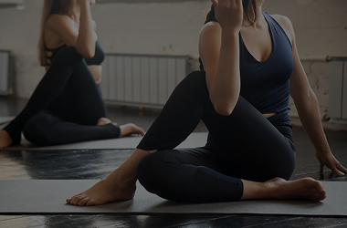
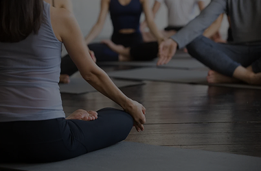
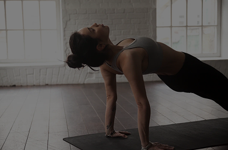
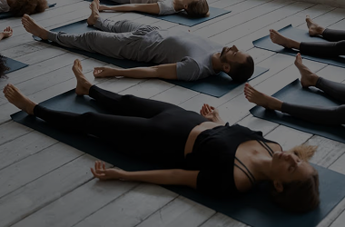
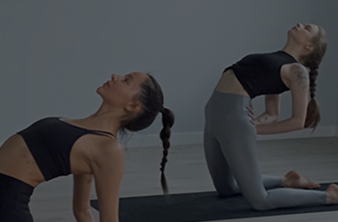
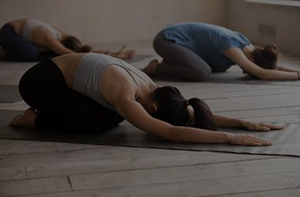
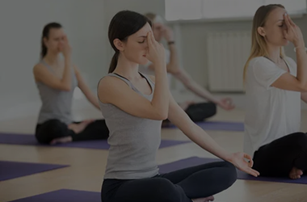
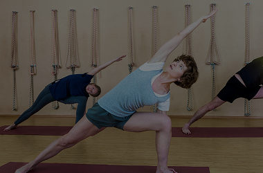

НАПРАВЛЕНИЯ
















Это фундаментальное направление, с которого стоит начать, если вы ищете баланс между силой и спокойствием. В Хатхе мы работаем медленно и осознанно: держим позы (асаны), соединяем их с дыханием (пранаямой) и учимся расслабляться там, где обычно зажаты (шея, поясница, плечи)
Эффект: Уходит боль в спине, улучшается осанка, ускоряется метаболизм, а мысли перестают хаотично прыгать.
Кому: Новичкам (идеальный старт), офисным работникам, тем, кто давно не тренировался и хочет «вспомнить тело».
Это не про растяжку. Это про энергию. Здесь вместо длительных статических поз — короткие, мощные динамические упражнения (крийи), пение мантр (на английском/русском), дыхание «Огненное» (капалабхати) и глубокие медитации.
Эффект: За 60 минут вы как будто «перезагружаете» мозг. Уходят тревожность, апатия и усталость. Появляется ясность, внутренний стержень и чувство, что жизнь снова в ваших руках.
Кому: Тем, у кого выгорание, хаос в голове, бессонница, или кто чувствует, что «застрял» в рутине.
Мы против насилия над телом. Наш стретчинг — это мягкое, но эффективное вытяжение мышц через расслабление и правильное дыхание (техника PNF, статическая растяжка). Вы не будете терпеть резкую боль, а будете шаг за шагом открывать суставы и снимать мышечные блоки.
Эффект: Походка становится легче, отеки уходят, перестают хрустеть колени и шея. Тело — послушным и гибким. Отличная профилактика варикоза.
Кому: Всем! Тем, кто бегает/качается (ускоряет восстановление), тем, кто сидит 8 часов за ноутбуком (снимает зажим таза), девушкам, мечтающим о шпагате (и получите его безопасно).
Это «йога сна», где вы лежите (в шавасане) и ничего не делаете. Преподаватель голосом ведет вас в состояние между бодрствованием и сном, где мозг перестает шуметь, а тело восстанавливается за 30 минут так, как за 3 часа обычного сна.
Эффект: Снимает глубочайший стресс, нормализует давление, убирает мигрени, учит быстро засыпать. После практики вы чувствуете себя так, будто проспали 10 часов.
Кому: Мамам в декрете, топ-менеджерам, тревожным людям, тем, у кого хроническая усталость или бессонница (даже многолетняя).
Это динамичная практика, где каждое движение синхронизировано с дыханием. Нет длительных статических поз — есть непрерывный поток (флоу), который разгоняет кровь, заставляет потеть и держит пульс на уровне кардиотренировки.
Эффект: Сжигание жира, укрепление мышц кора, развитие выносливости и координации. Тело подтягивается, появляется лёгкость и энергия на весь день.
Кому: Тем, кому скучно в статике. Кто хочет похудеть, развить выносливость и силу. Кто любит попотеть и «реально устать после тренировки».
Это работа с опорами (стулья, валики, ремни, болстеры, одеяла) и максимально бережным подходом. Асаны упрощены, держатся недолго и всегда есть альтернатива. Никакой боли «через не могу» — только безопасное движение в комфортной амплитуде.
Эффект: Снижение боли в суставах и спине, улучшение подвижности, восстановление после травм и операций. Тело учится двигаться без страха и дискомфорта.
Кому: Пожилым людям, после травм и операций, при остеохондрозе, артрите, артрозе, сколиозе, грыжах. Для тех, кому обычная йога противопоказана.
Час без асан. Только вы, ваше дыхание и полная тишина (или голос преподавателя). Мы учимся управлять дыханием: успокаивать нервную систему, насыщать мозг кислородом, возвращать себе спокойствие за 10 минут в любой ситуации.
Эффект: Снижение тревоги и панических атак, нормализация давления, улучшение концентрации и памяти. Вы перестаёте «накручивать» себя и учитесь быть в моменте здесь и сейчас.
Кому: При тревоге, панических атаках, высоком давлении. Для продвинутых практиков и для новичков, которые хотят научиться дышать правильно.
Это максимально точная, выверенная практика с большим количеством вспомагательных материалов (кирпичи, ремни, одеяла, стулья, валики). Асаны держатся долго, каждое положение выстраивается до миллиметра с учётом анатомии. Никакой спешки — только качество.
Эффект: Идеальная осанка, уходит боль в спине и суставах, выравнивается таз и позвоночник. Вы начинаете чувствовать своё тело и понимать, где зажаты, а где перерастянуты.
Кому: Для людей с травмами, проблемной спиной, сколиозом, грыжами. Для новичков — идеальный старт, потому что вас научат делать всё правильно с первого раза. Для перфекционистов, которым важна идеальная техника.